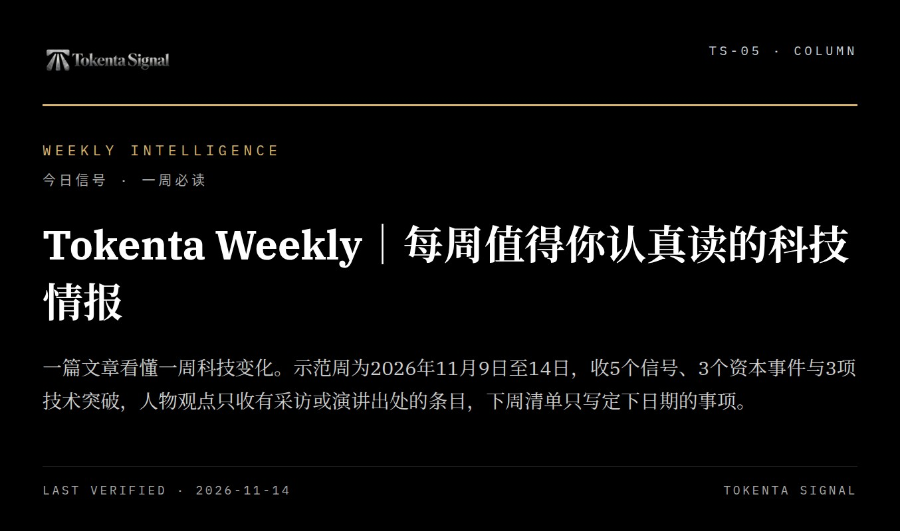
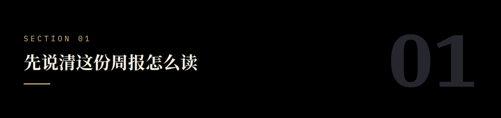
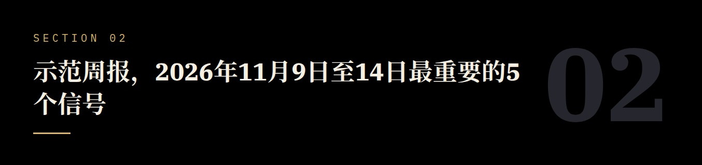
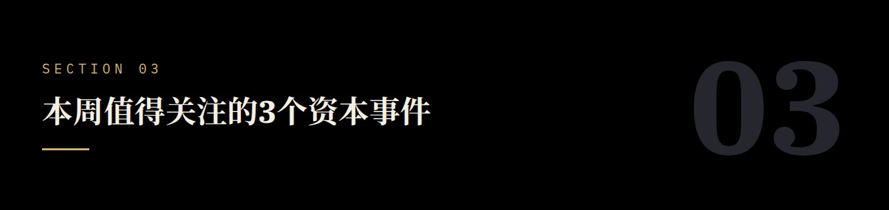
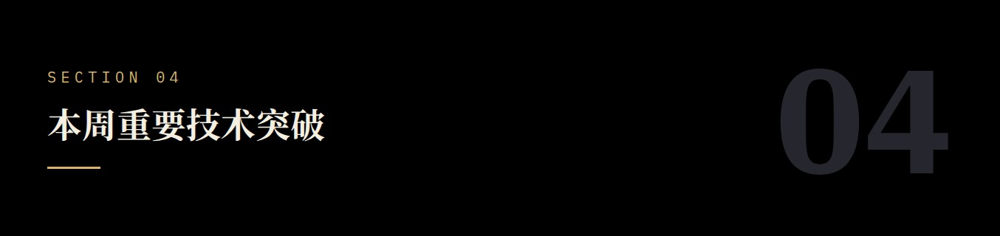
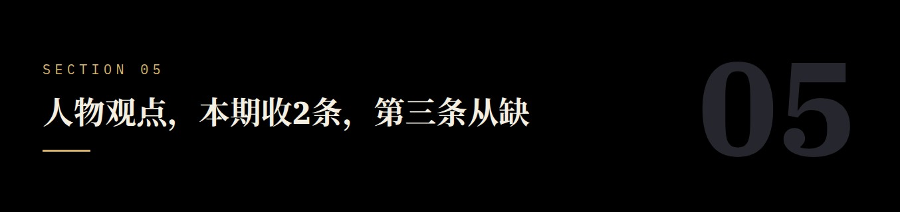
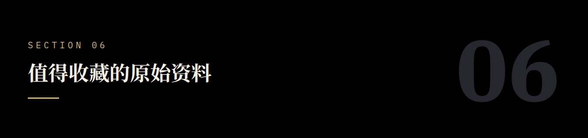
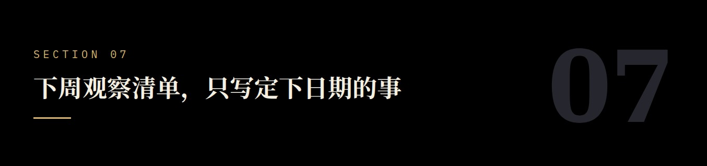
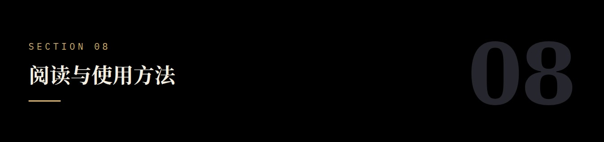

Tokenta Weekly是今日信号菜单里的周度栏目，示范周为2026年11月9日至11月14日。它把一周分散在模型、算力、资本、机器人与政策里的变化，收进一篇文章里。读者不需要每天追新闻，用一次完整阅读，就能知道这一周真正改变了什么，以及下周该盯什么。
每期固定五块内容，本周最重要的5个信号，本周值得关注的3个资本事件，本周重要技术突破，人物观点，以及下周观察清单。入选标准只有一条，事件发生日期必须落在当周窗口内，并且有可回溯的原始出处。旧闻不包装成新消息，传闻不写成定论，金额写清币种与性质。本篇不构成任何投资建议。

五个领域对应五种变化。模型与产品看能力边界与分发入口，算力与基础设施看芯片、数据中心与能源，资本与公司看融资、并购、财报与人事，机器人与具身看模型进入物理世界的进度，政策与治理看监管、诉讼与平台规则。五个领域在一周里互相牵动，单看任何一个，都会漏掉因果。
阅读顺序按重要性排，不按时间排。先读5个信号建立全周地图，再读资本事件理解钱与组织的变化，然后看技术突破判断哪些能力已经越过演示阶段。人物观点只收有原始采访或演讲出处的条目，宁可少收，也不拿新闻稿里的套话冒充观点。最后的下周清单只写已经定下日期的事项，方便读者提前标记日历。

这一周的密度很高。11月9日一天之内，模型、芯片与机器人三条线同时更新。11月10日资本与公司层面集中爆发，11月12日则同时出现人事地震、基础设施故障与产品入口变化。下面5条按影响范围排序，排在前面的，是会改变下周议程的事件。
Tokenta Signal判断，这一周的主线是入口与权力同时重排。搜索迎来最大一次模型升级，支付入口长在聊天产品里，英伟达的权力交接没有给出理由，云端办公一停，邮件先停。能力进步仍然很快，但决定谁能用、谁来付、谁负责的规则，变化得更快。
英伟达首席执行官交接，黄仁勋辞职
事件 黄仁勋辞去总裁、首席执行官与董事职务，首席财务官科莱特·克雷斯出任临时首席执行官，董事会启动永久接班人选聘
日期 2026年11月12日宣布，辞呈11月11日获董事会接受
来源 英伟达投资者关系新闻稿，本号Issue 233素材
为什么重要 执掌33年的创始人突然离任且未给理由，下周财报与接班人选将决定这家公司的叙事走向
新闻稿与8-K文件均未说明辞职理由，涉事传闻属媒体报道口径，本卡不作定论。
Anthropic启动IPO路演
事件 Anthropic启动IPO路演，8.25亿股定价70至78美元，公开募资最高约644亿美元，另有260亿美元私募配售
日期 2026年11月10日
来源 Silicon Report报道并引述路透口径，本号Issue 205素材
为什么重要 前沿模型公司进入公开市场定价阶段，最高估值口径约1.4万亿美元，资本与模型竞争自此共用一张报表
募资与估值为路演报道口径，最终定价以正式发行结果为准。本篇不构成任何投资建议。
Gemini 4 Hydrogen上线，谷歌搜索最大模型升级
事件 谷歌发布Gemini 4 Hydrogen，称其为搜索迄今最大的模型升级并面向所有用户推出，覆盖Gemini应用、搜索、Gemini API与AI Studio
日期 2026年11月12日
来源 谷歌官方博客，本号Issue 222素材
为什么重要 最快模型直接进入最大的分发入口，日常编码与智能体任务的默认能力被整体抬高，用户不需要主动选择
定价每百万输入token 1.50美元，口径来自谷歌官方博客。
ChatGPT钱包上线，智能体可以代付
事件 OpenAI推出ChatGPT钱包，智能体经用户核验后可代为下单，真实卡号对商户与智能体不可见，首批面向美国Pro订阅者
日期 2026年11月13日
来源 OpenAI官方博客，本号Issue 229素材
为什么重要 支付入口长进聊天产品，智能体从给建议走向替用户完成交易，平台与商户之间的权限边界要重新谈
首批只面向美国Pro订阅者，地区与资格限制以OpenAI官方页面为准。
微软365全球宕机超12小时
事件 微软365全球宕机从11月12日持续至13日，Exchange Online邮箱不可用
日期 2026年11月12日至13日
来源 第三方转载（azureblog.co.uk），原始出处待补，本号Issue 225素材
为什么重要 办公基础设施一停，邮件与AI工具同时停摆，集中化依赖的风险在一周内被完整演示了一次
微软称暂无恶意活动迹象，故障报告峰值约13万份为Downdetector统计口径。

资本事件只收已经宣布的交易与融资，估值、融资额与交易金额分开写。Anthropic的IPO路演已经放进信号区，本节另外选三笔性质不同的交易，一笔产业并购，一笔芯片融资，一笔智能体平台融资。三笔放在一起，能看出钱在往产业链的哪几层走。
半导体材料的钱在做整合，推理芯片的钱在赌量产前夜，智能体平台的钱在买治理能力。三笔交易没有一笔投给更大的通用模型，资本这一周押的是基础设施与秩序。
三井化学116亿美元收购JSR
事件 三井化学联手日本开发银行收购半导体材料商JSR
日期 2026年11月9日
来源 路透社报道，本号Issue 195素材
金额与性质 交易金额116亿美元，约1.84万亿日元，属并购交易，不是融资也不是估值
为什么重要 JSR的光刻胶与三井的EUV薄膜互补，目标是打造日本最大的半导体材料生产商
交易规模接近三井自身市值的三倍，金额口径来自路透报道。本篇不构成任何投资建议。
Fractile完成7.2亿美元C轮融资
事件 英国AI推理芯片公司Fractile完成C轮融资，把DRAM堆叠在逻辑芯片上做推理硬件
日期 2026年11月11日
来源 Balderton公告，本号Issue 213素材
金额与性质 融资7.2亿美元，投后估值约70亿美元，两项分开计算，首批芯片计划2027年出货
为什么重要 资本在芯片出货之前下重注，赌的是推理成本路线，而不是训练芯片的既有格局
芯片尚未出货，估值兑现要等2027年首批交付的实测结果。
LangChain完成3亿美元C轮融资
事件 LangChain完成C轮融资，资金投向LangSmith平台，押注智能体治理
日期 2026年11月13日
来源 LangChain官方博客，本号Issue 231素材
金额与性质 融资3亿美元，估值30亿美元，CapitalG领投，估值约为一年前B轮的2.4倍
为什么重要 智能体跑进生产环境之后，管控与可观测性开始比模型本身更值钱，这笔钱买的是治理层的位置
官方博客标题口径为完成3亿美元融资，估值数字见官方博客正文与本号素材记录。

技术突破的入选门槛是可验证。要有官方发布、论文或公开评测数字，只讲愿景的不收。本周三项突破分别落在软件验证、机器人学习与训练推理芯片上，共同点是都给出了可复核的量化结果，而不是演示视频。
其中分量最重的是形式化验证。智能体四周写出超过600万行机器核验的证明代码，验证对象是手机实际运行的编译代码。验证工作的瓶颈，开始从写证明转向写规范。这条变化的影响，会比单次模型发布更持久。
AlphaProof Code给Signal编译代码上数学锁
事件 DeepMind发布形式化验证框架AlphaProof Code，智能体四周写出超过600万行Lean证明，验证Signal协议编译代码的前向保密、认证与泄露后安全等性质
日期 2026年11月10日
来源 Google DeepMind官方博客，本号Issue 208素材
为什么重要 验证对象是实际运行的机器码，验证产物已开源，许可证类型待确认，形式化验证的成本结构被改写
验证范围只覆盖libsignal一对一会话的编译代码，证明智能体本身未公开。
NVIDIA GR00T 2，机器人看人学手艺
事件 英伟达在奥斯汀CoRL发布开放世界动作模型GR00T 2，50项任务无演示完成40项，单次演示平均成功率71%，5次演示达95%
日期 2026年11月9日
来源 英伟达官方博客，本号Issue 199素材
为什么重要 机器人从逐条看演示学动作，走向少演示泛化，物理AI的训练效率出现可量化的跃升
评测数字为英伟达官方博客口径，基于Cosmos世界模型生成数据训练。
谷歌第八代TPU，8tx与8i Max登场
事件 谷歌发布TPU 8tx与TPU 8i Max，第八代TPU一年内出到第四款，8i Max的算力、SRAM与内存带宽均为8i的两倍
日期 2026年11月9日
来源 谷歌官方博客，本号Issue 198素材
为什么重要 自研芯片的迭代速度继续加快，机密推理与长上下文成为新款的明确分工，算力供给的节奏掌握在平台自己手里
价格与上市日期未公布，官方博客由Amin Vahdat署名。

固定模板预留3条人物观点，本期只收2条。原因写在明处，本周素材里其余重磅发布大多是公司公告与新闻稿，没有附带可回溯的原始采访或演讲文本。把公告口径改写成个人观点，是这个栏目明确拒绝的做法。缺口保留，等有合格出处时再补。
收录的两条出处不同。一条来自企业负责人接受财经媒体采访，一条来自公司高管的主题演讲。两者谈的是相邻的问题，产品下一步拼的是连接与防守，而不是单点能力。读者点开卡片里的链接，可以回到原始场合核对上下文。
Oura以6.25亿美元收购Counsel Health（交易记录）
人物 Oura首席执行官Tom Hale
出处 收购事实据Oura官方博客与TechCrunch 2026-11-10报道。Hale的彭博采访原文未定位，本条按交易记录处理
日期 2026年11月10日
核心观点 这笔交易把可穿戴设备数据、临床AI与医生接诊连成医疗入口。此为交易结构解读，Hale本人的采访观点待彭博原文定位后另行收录
为什么重要 6.25亿美元全现金收购，买的是医疗服务入口位置，硬件厂商开始买入口，而不只是卖记录身体的设备
彭博采访原始链接未定位，本卡不含采访引言，观点条目待原文补齐后恢复。
Greg Brockman在Cyber at the Frontier主题演讲
人物 OpenAI总裁Greg Brockman，负责网络应用AI的Nancy Wang同场介绍产品
出处 OpenAI官方专题页记录的主题演讲，Daybreak Red Team与Defense Factory在同场发布
日期 2026年11月，官方专题页未标注活动日期
核心观点 演讲的立场是防守方需要前沿模型，因为攻击方已经有了，前沿能力因此应当先做成防守产品
为什么重要 同周四家非营利组织起诉五家实验室要求冻结更强模型开发，这场演讲是OpenAI给出的公开回应框架
核心观点为演讲立场概括，不是逐字引语，完整上下文见OpenAI官方专题页。

周报的价值一半在筛选，另一半在出处。本期原始资料优先收官方页面，英伟达投资者关系的交接新闻稿，谷歌与DeepMind的官方博客，OpenAI的Daybreak专题页，LangChain的融资博客，百度的ERNIE发布页。完整链接列在本篇末尾的来源清单里，按信号、资本与技术三组排列。
收藏时建议连日期一起存。官方页面会更新，新闻稿会增补，只有带日期的原始版本，才能在事后复盘时还原当时到底知道了什么。本栏目每期归档时保留当期链接与核验日期，不回改旧期内容。

观察清单从2026年11月15日起排。最近的一个时间点是11月17日的英伟达财报，新管理层第一次公开露面，市场等的是接班安排与业绩指引。11月19日是Anthropic上市时间的报道口径，最早可能在这一天登陆纳斯达克，公司尚未正式确认，读者按待确认处理。
再往后是几个已经写进官方页面或公开报道的日期。媒体报道百度将在11月25日前开源ERNIE 5.5 Flash权重，兑现与否当天就能验。12月9日SpaceX Starbase园区税减免审议，科奇斯县听证会在12月内举行，12月10日谷歌智能眼镜正式开售。没有日期的预期不进清单，避免把猜测排进日历。
英伟达第三财季财报与电话会
事项 英伟达公布第三财季业绩并举行财报电话会
日期 2026年11月17日
时间锚点来源 本号Issue 233素材记录，业绩仍定于11月17日公布，电话会同日举行
看什么 新管理层首次公开露面，接班安排、业绩指引与董事会口径
财报日期来自交接事件的后续日程记录，临近时以英伟达投资者关系日历复核为准。
Anthropic纳斯达克上市时间窗口
事项 Anthropic股票在纳斯达克挂牌，代码ANT
日期 最早2026年11月19日，报道口径，待公司正式确认
时间锚点来源 本号Issue 205素材所引第三方转载站Modern Robotics的报道口径
看什么 最终发行价、首日交易与私募配售的落地情况
该日期为报道给出的最早可能时间，不是公司确认的定档日期。本篇不构成任何投资建议。
百度ERNIE 5.5 Flash权重开源期限
事项 百度按承诺放出ERNIE 5.5 Flash Preview的模型权重
日期 2026年11月25日前
时间锚点来源 11月25日期限为媒体报道口径（TokenPost等），官方发布页只写 soon，见本号Issue 218素材
看什么 权重是否如期以Apache 2.0协议放出，总参数2800亿、每次激活140亿的口径是否与权重文件一致
截至本篇核验日权重尚未放出，承诺状态以官方发布页为准。
SpaceX两座AI超算园区地方审议
事项 SpaceX得州Starbase市委员会审议财产税减免，亚利桑那州科奇斯县举行公开听证会
日期 Starbase审议为2026年12月9日，科奇斯县听证会为2026年12月内，日期待定
时间锚点来源 Unite.AI原文，Starbase审议日期明确，科奇斯县听证只定月份
看什么 总额超740亿美元的园区计划能否过第一道门，亚利桑那园区最高6吉瓦的用电安排如何落地
投资金额为计划口径，地方程序走完前不写成已开工项目。
谷歌智能眼镜正式开售
事项 谷歌智能眼镜结束预订并正式开售，Warby Parker系列395美元起，Gentle Monster系列449美元起，三星为合作方，首发美国与韩国
日期 2026年12月10日
时间锚点来源 谷歌官方博客，见本号Issue 232素材，11月12日开启预订时已公布开售日
看什么 Gemini住进镜框后的实际体验，实时翻译与导航的可用程度，以及首发两国的市场反应
首发不含中国大陆，中国用户购买与使用条件待核验。

01 先读5个信号建立全周地图，再按资本、技术、人物、清单的顺序往下读，全程约十分钟。
02 每张卡片都带日期与来源，点开链接可以回到原始页面核对，金额与口径以原始页面为准。
03 人物观点只收有采访或演讲出处的条目，条数不足时本栏目直接标注从缺，不用公告口径补位。
04 下周观察清单里的日期分两类，公司或官方已确认的直接标记日历，报道口径的先按待确认处理。
05 本栏目固定每周更新一期，示范周为2026年11月9日至14日，下一期覆盖11月15日至21日。

SOURCES · 来源与核验
[1] 英伟达投资者关系，首席执行官交接新闻稿，2026年11月12日
[2] 谷歌官方博客，Gemini 4 Hydrogen发布与搜索升级，2026年11月12日
[3] OpenAI官方博客，ChatGPT钱包发布，2026年11月13日
[4] OpenAI官方专题页，Cyber at the Frontier与Daybreak产品，2026年11月12日
[5] Google DeepMind官方博客，AlphaProof Code发布，2026年11月10日
[6] 谷歌官方博客，TPU 8tx与8i Max发布，2026年11月9日
[7] 英伟达官方博客，GR00T 2在CoRL发布，2026年11月9日
[8] LangChain官方博客，3亿美元C轮融资，2026年11月13日
[9] Balderton公告，Fractile完成7.2亿美元融资，2026年11月11日
[10] 路透社经SRN转载，三井化学收购JSR报道，2026年11月9日
[11] 百度ERNIE官方发布页，ERNIE 5.5 Flash Preview，2026年11月11日（开源期限为媒体口径）
[12] 谷歌官方博客，智能眼镜预订与12月10日开售，2026年11月12日
[13] Oura 官方博客，收购 Counsel Health 公告，2026-11-10
[14] TechCrunch 报道，Oura 以 6.25 亿美元收购 Counsel Health，2026-11-10
LAST VERIFIED · 2026-11-14
TOKENTA SIGNAL
Extracting signals from the noise. 本栏目内容来自公开来源并标注核验日期，不构成任何投资建议。
signal.tokenta.space · team@tokenta.space